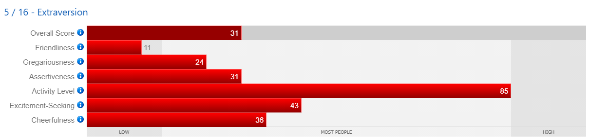
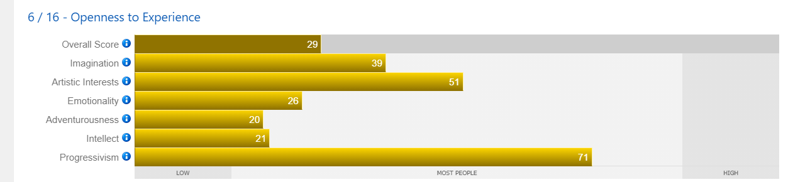
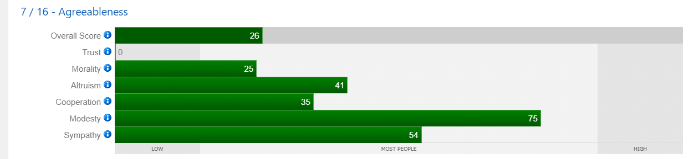
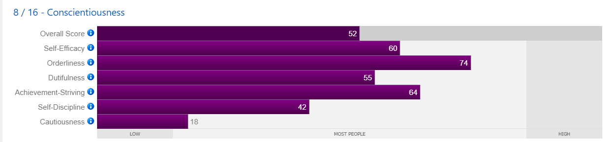

If I have anxiety, I often feel as if something bad is about to happen. I may be terrified of certain things or I may have a generalized fear of everything.
Whenever I feel cheated, I get angry and resentful because I'm sensitive about being treated fairly.
The opinions of people bother me, which makes me a very private person indeed.
Because of my fear of being rejected or ridiculed, I am reserved and uneasy around people.
Extraversion

Large crowds make me feel claustrophobic, and as a result, I deliberately avoid them.
I frequently require seclusion as well as solitary time to recharge my batteries.
I'm a quiet person who prefers to defer to others when it comes to running the show in gatherings. I'm a person who likes to keep things moving at a rapid pace.
Openness to Experience

It is safe to say I you have a healthy dose of imagination, but I prefer to keep things grounded in reality wherever possible.
My interest in the arts is aroused, but I'm not completely engrossed in them.
I rarely freely express my feelings and aren't always aware of them.
In many situations, I may show a willingness to question established norms, authority, and conventional values.
Agreeableness

I have a stereotypical view of others as being self-centered, cunning, and even dangerous.
In new partnerships, I'm wary and reluctant to fully disclose who I am.
As long as someone is in need, I will come to their aid. If someone asks for an excessive amount of my time, I may feel that they are interfering with my personal time.
I dislike conflict, but if I believe in something enough, I will stand up for myself or make my point.
I'm not one to put myself forward as superior than others, and I'm even less likely to brag about my achievements.
I'm a sympathetic person most of the time, but I want to be objective when I can.
Conscientiousness

Confidence in my ability to attain my goals is moderate.
I enjoy routines and timetables, and I'm well-organized to boot. I am likely to construct to-do lists and schedules frequently.
Despite being mostly responsible, I can be unreliable at times due to my average sense of duty and obligation.
Most of the time, I strive to do my best, but there are times when I am satisfied with simply doing the task at hand.
I have a strong sense of self-discipline and is able to stick with things until they are completed.
However, I am prone to becoming sidetracked and have a history of procrastinating.
What are my Hobbies?
My Hobbies include:
Binge watching series/movies
Listen music
Read book
Web surfing
Cooking meals for my family
Clothes Shopping
Personal Motto
"Inspired By Mom: Don't put your eggs all in one basket. Never say I can't, but always say I WILL".